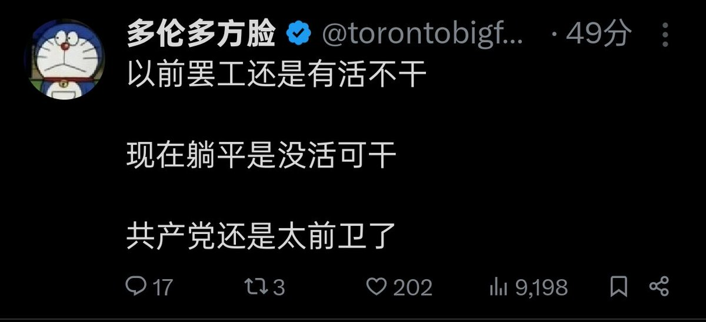

大狐帝国史官邹智萱（笔名段歌文）
@Rococo90933671
讲真的，咱确实也不想啥都不干啊。有个奋斗的目标，确实是很美好的事情。
走极端式带节奏炒作是一方面，但是另一方面，8小时，一周五天，双休，加班双倍工资，明明是正常的雇佣标准，但是却早已沦为笑柄了，这种情况下再做出这样的宣传，很难不让人产生情绪啊……
只能说，跟宣传部门这群虫豸在一起，怎么能搞好宣传呢……

哏儿都老钱
@Oldmoney_1987
本来不想发这个，觉得没啥可说的，结果竟然却有那么一帮人非得拿这个说事带节奏，这我就忍不了了。 https://t.co/A2JJJlaDMK